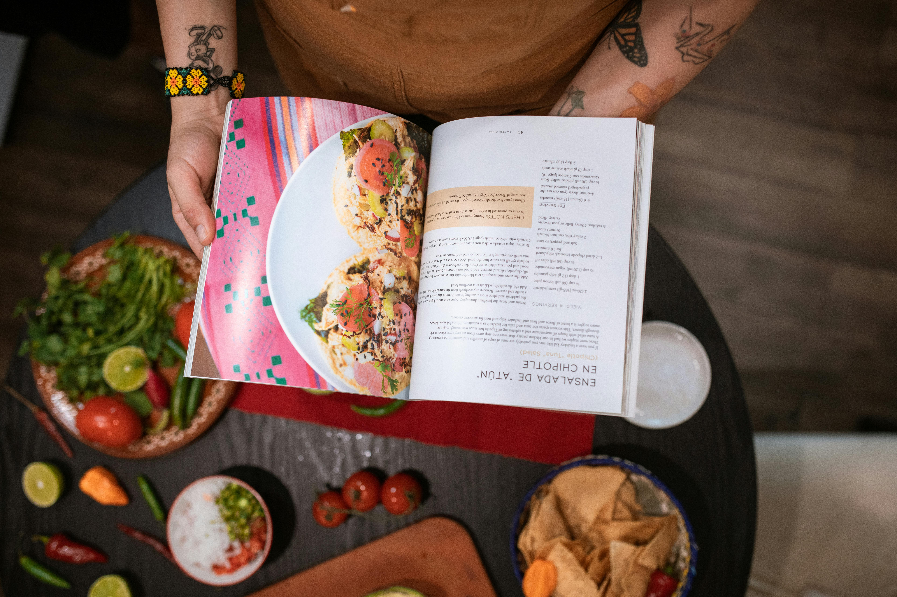

InicioSopasCarnesEnsaladasPostres

¡Bienvenidos a nuestro rincón culinario, donde la magia de la cocina cobra vida! En nuestra página de recetas, te sumergirás en un mundo de sabores exquisitos, aromas tentadores y platos que despiertan los sentidos. Ya seas un chef experimentado o un entusiasta novato en la cocina, aquí encontrarás inspiración para deleitar tu paladar y el de tus seres queridos.
Explora nuestra amplia colección de recetas cuidadosamente seleccionadas, desde clásicos reconfortantes hasta creaciones innovadoras que te harán descubrir nuevas pasiones gastronómicas. Nos esforzamos por ofrecerte no solo instrucciones detalladas, sino también la historia detrás de cada receta, para que cada plato se convierta en una experiencia única.
Te invitamos a sumergirte en el arte de la cocina con nosotros, compartiendo el placer de crear y disfrutar de deliciosas comidas. Prepárate para viajar a través de sabores, ingredientes frescos y técnicas culinarias, ¡y descubre cómo cada plato cuenta su propia historia en nuestra cocina virtual!
¡Bienvenidos a bordo de este delicioso viaje gastronómico!